Open Source in Science
Challenges and Opportunities
Personal background
studied mathematics, genetics, psychology,
got involved in the
Git
project,
started and maintained the
Fiji
project, an extensible scientific image processing framework,
now maintaining
Git for Windows
One Day in the Life of an Open Source maintainer
Read emails. Lots of 'em. Field usage questions.
Take care of contributions, vulnerabilities, sometimes new features
Mentor engineers
etc
Open Source and Science, a natural match
It's all about sharing knowledge
Opportunity: impact
Exhibit A: Fiji, cited
31k+ times and counting
https://doi.org/10.1038/nmeth.2019
Exhibit B:
Matplotlib
, cited
almost 16k times
https://doi.org/10.1109/MCSE.2007.55
Primary challenge: funding
Everybody loves free stuff, nobody likes to pay for it.
... unless they can slap their name on it?
e.g.
Chan Zuckerberg Initiative
e.g. Fiji vs DFG, Fiji vs MotionTracker, Fiji vs Icy
Challenge: publishing
Originally: nobody would accept software papers. Now:
high standards
(industry-grade code quality expected from non-CS researchers)
Challenge: best practices
Code Comments
Object-Oriented Design, Functional Programming
Regression Testing (mock objects)
Continuous Integration
etc
Challenge: maintenance
Tending to the bug tracker,
answering questions about usage,
helping contributors getting started,
etc
How to support open-source software and stay sane
https://doi.org/10.1038/d41586-019-02046-0
Challenge: community building
Stress and Burnout in Open Source
https://doi.org/10.1145/3377816.3381732
Opportunity: stand on giants' shoulders
https://www.researchgate.net/topic/Open-Source-Scientific-Software/publications
https://github.com/topics/science
Questions?